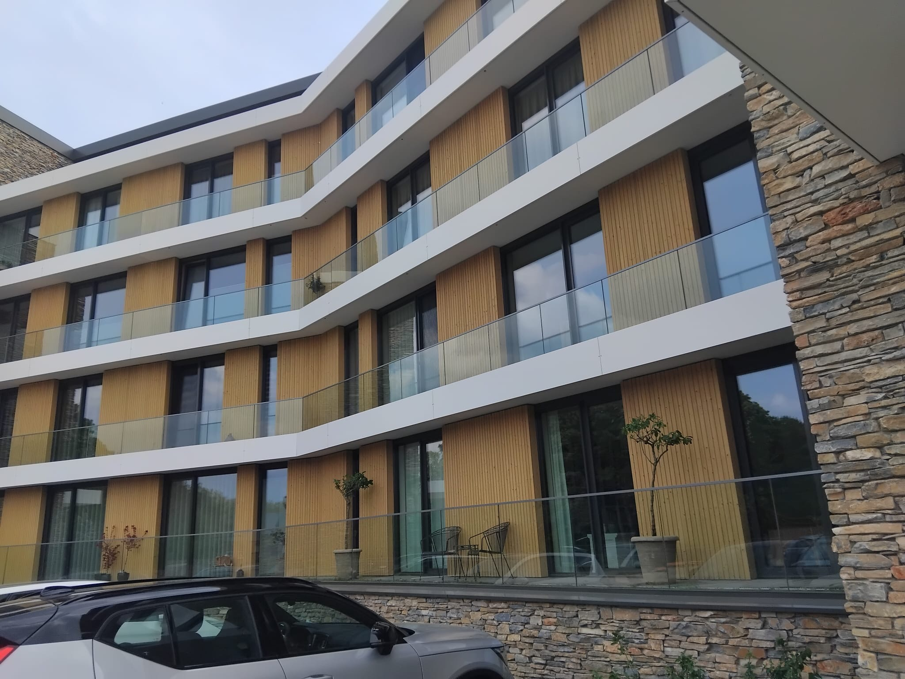
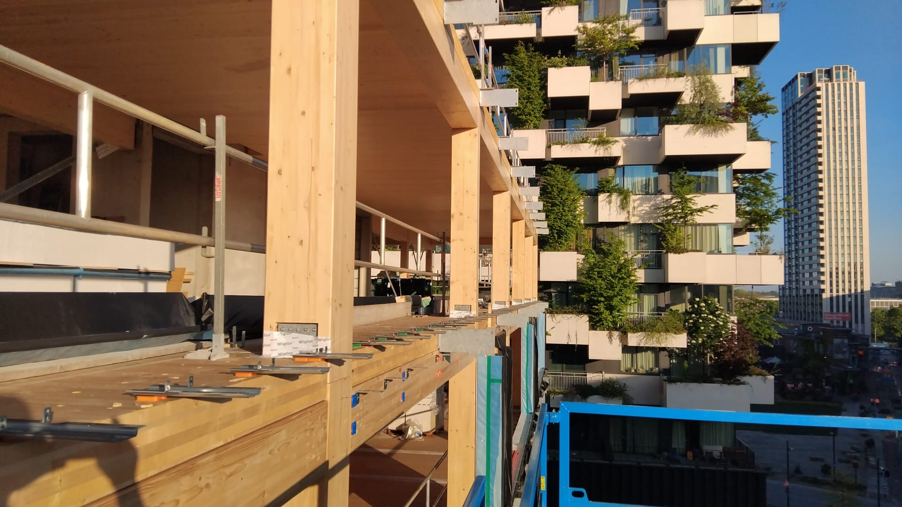
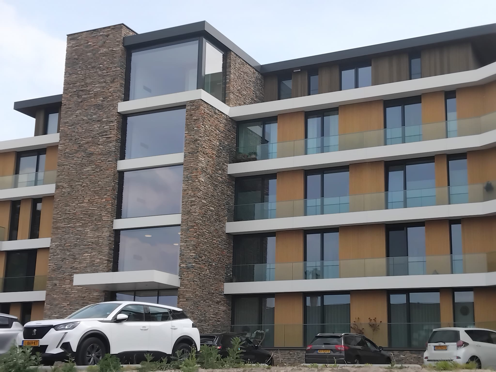
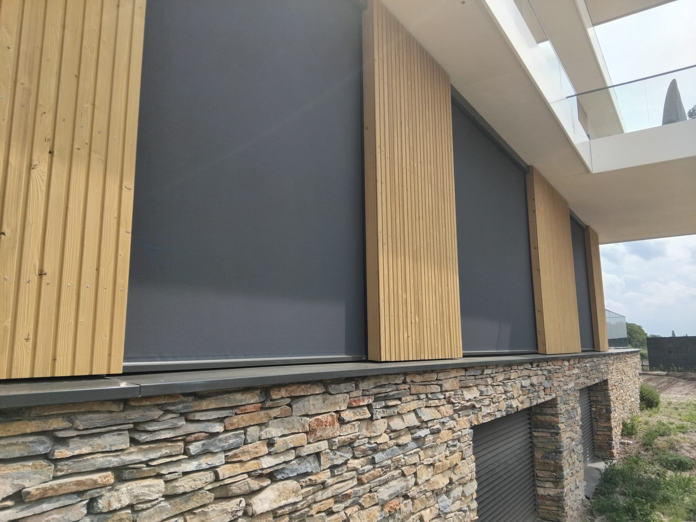

EKP-terrein Noord
Photos of a project with prefab, frames and facade work in 's-Hertogenbosch.
This shows the kind of work I am usually brought in for: prefab build-up, frame connections, facade rhythm and neat finishing.






